Состояние высокой продуктивности
High Performance State
Игры Нового Кода являются одной из базовых технологий Нового Кода НЛП, с помощью которой человек может в среднем в течение 10 минут войти в состояние высокой продуктивности (High Performance State).
Что это за состояние?
По непосредственным ощущениям испытывающих это состояние, оно характеризуется активизацией общего тонуса организма, алертностью, легкостью движений, а главное - повышенной скоростью мышления, концентрацией внимания и активизацией творческих способностей.
Интересно отметить, что в этом состоянии мышление работает не в формате "логического размышления", а в формате "сознательный вопрос - бессознательный ответ", из чего можно сделать вывод, что в состоянии высокой продуктивности значительно активизируется бессознательное мышление (интуиция).
Как это состояние выражается в психике и физиологии? Чтобы ответить на этот вопрос, наши коллеги по Лаборатории НеоКода - Алексей Каптерев (тренер НЛП) и Марина Королева (к.м.н., к.п.н.) провели исследование игр Нового Кода НЛП с применением различных физиологических и психологических методов.
Статью, полностью описывающую это исследование, можно скачать по этой ссылке. Наиболее интересные фрагменты этой статьи я привожу ниже.
Выводы, полученные в ходе исследования
1. Игры Нового Кода НЛП вызывают повышение энергообмена мозга, что было достоверно показано путем регистрации уровня постоянного потенциала мозга.
2. Функциональное состояние мозга на время меняется в сторону улучшения взаимодействия между различными участками коры головного мозга, улучшается взаимодействие и переработка сенсорной информации разными анализаторами (органами чувств) - зрительным, кинестетическим, аудиальным, улучшаются связи с речевыми центрами. Это хорошо видно при изучении когерентности электроэнцефалограмм.
3. В процессе игр Нового Кода НЛП меняется межполушарная асимметрия. Если в обычном состоянии у правшей более активно левое полушарие, то после игры активности полушарий как бы уравнивается, а в некоторых случаях даже более активным становится правое полушарие на фоне общего повышения активности обоих полушарий.
4. Заметно меняется и активность вегетативной нервной системы в сторону повышения симпатического тонуса и привлечение коры головного мозга и стволовых структур к регуляции работы внутренних органов и кровеносной системы.
5. Все эти физиологические изменения действительно дают возможность изменения психологического состояния. У подавляющего большинства испытуемых мы наблюдали изменение предпочитаемого цвета на тесте Люшера и ведущей фигуры - на психогеометрическом тесте. Через некоторое время восприятие возвращается обратно, однако изменения, созданные в таком состоянии, остаются надолго.
Исследование
Нас заинтересовали предположения Гриндера и нам захотелось проверить, что же в действительности происходит с мозгом, чем отличается это состояние от обычного напряжения, усиленного внимания, чтения вслух и т.д. Исходя из гипотезы, что психическое и физиологическое в человеке неразрывно, хотя и неоднозначно связано, хотелось найти какие-то объективные маркеры этого состояния.
Мы использовали несколько физиологических и психологических методов: анализ энергообмена мозга путем регистрации уровня постоянного потенциала (УПП), анализ биоэлектрической активности мозга или электроэнцефалограмму (ЭЭГ). (Другие методы описаны в оригинальной статье.)
УПП (описание метода)
Наиболее интересные результаты были получены при изучении энергообмена мозга (УПП). Что это за метод, что он отражает? Наш мозг состоит из нервных клеток и клеток глии (вспомогательные клетки, которые сами нервных импульсов не передают, но обеспечивают нормальную жизнедеятельность нервных клеток). Для нормальной жизни нервных клеток и глии необходимо питание. В основном это глюкоза мозговой крови. Чем активней работает мозг, тем активней его метаболизм, тем больше он потребляет глюкозы. Именно уровень метаболизма мозга и отражает уровень постоянного потенциала (УПП), который мы измеряем.
Результаты исследования
Результаты исследований показали, что игры Нового Кода НЛП существенно повышают энергообмен мозга и вызывают перераспределение активности его областей в сторону повышения энергообмена правого полушария. Это наблюдается как у "мастеров", так и у "новичков", однако у "мастеров" это состояние сохраняется дольше.
На рисунке 2 представлена динамика энергообмена мозга у одного из опытных игроков, 29 лет.
|
2.1. Фон до начала работы |
2.2. Возрастная норма для 29 лет |
|
|
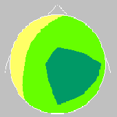 |
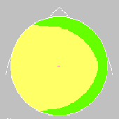 |
|
|
2.3. Фон после окончания 1 игры |
2.4. Фон перед началом 2 игры |
|
|
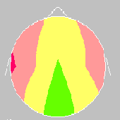 |
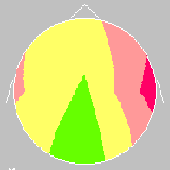 |
|
|
2.5. В процессе "алфавита" (2 игра) |
2.6. "Пик" состояния |
|
|
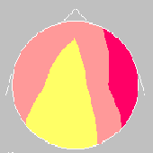 |
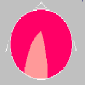 |
|
|
2.7. Последействие |
Калибровка |
|
|
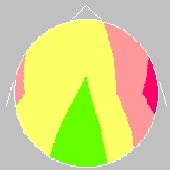 |
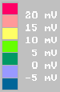 |
УПП регистрировали в фоне (рис. 2.1.), затем проводилась первая игра "Алфавит" около 10 минут в положении стоя, после чего регистрировали УПП повторно (рис. 2.3). После перерыва 3-5 минут проводилась еще одна регистрация фона УПП (рис. 2.4) и затем в процессе второй игры "алфавит" в положении сидя. Рисунок 2.5 соответствует примерно середине игры, рисунок 2.6 - пику состояния высокой эффективности по субъективному отчету испытуемого. Рисунок 2.7 соответствует состоянию спустя 6-7 минут после прекращения игры.
Изначально предполагалось, что игры Нового Кода НЛП равномерно "загружают" оба полушария. Данные исследования показывают, что это не совсем так. Вначале активируются височные области обоих полушарий. При этом в затылочных областях, где локализуются первичные зрительные области, наблюдается даже некоторое снижение (несмотря на то, что зрительный анализатор загружен очень сильно). При более длительном воздействии - вторая игра - наблюдается более выраженная активация правого полушария.
В психофизиологической литературе упрощенно принято считать, что левое полушарие (доминантное) у правшей в большей степени ответственно за анализ и осознанную логическую обработку поступающей информации. В левом полушарии у правшей находятся и центры речи, взаимодействие с которыми необходимо для осознания информации. Правое полушарие отвечает за синтез, целостное восприятие. Многие исследователи называют его "эмоциональным" в отличие от "рационального" левого, часто связывают с деятельностью бессознательного в человеческой психике.
На основании полученных данных можно констатировать, что игры Нового Кода НЛП не просто повышают энергообмен, активность мозга, но и меняют вклад полушарий, усиливая в большей степени и более длительно активность правого полушария.
Таким образом, на основании проведенного исследования можно заключить, что игры Нового Кода умеренно, в пределах возрастной нормы (т.е. это совершенно безопасно) повышают энергообмен мозга, на время приводя мозг, образно выражаясь, в состояние боевой готовности (состояние высокой продуктивности), изменяя при этом привычное распределение активности двух полушарий мозга. Причем, у людей, регулярно практикующих игры Нового Кода НЛП это состояние может сохраняться довольно длительно - до часа и дольше, у новичков - короткое время, 10-15 минут. Именно в это время, если обратиться к актуальной задаче или проблеме, возможны эффективные решения. Если же это состояние не использовать - ничего не происходит и через некоторое время энергообмен мозга возвращается к исходному состоянию.
Электроэнцефалограмма (описание метода)
Электроэнцефалограмма (ЭЭГ) - графическая запись биоэлектрических процессов мозга, отводимых с помощью электродов, расположенных на поверхности головы. ЭЭГ отражает структуру активности коры головного мозга, которая у здорового человека отличается определенной картиной, соответствующей гармонической сочетаемости протекания основных нервных процессов в мозге.
В отличие от УПП, который отражает энергетику мозга, активность метаболизма, ЭЭГ больше привязана именно к функциональной активности мозга здесь и сейчас, в момент регистрации. Это более оперативная система слежения за функциональным состоянием мозга. У здорового человека на ЭЭГ можно регистрировать смесь различных ритмов частотой от 0,5 до 60 гц, которые разделены на определенные функциональные диапазоны.
Спонтанные колебания биопотенциалов различаются по частоте:
|
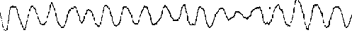 |
дельта-волны |
|
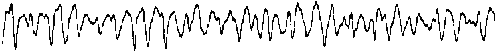 |
тета-волны |
|
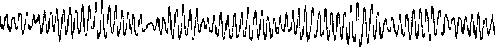 |
альфа-волны |
|
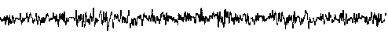 |
бета-волны |
У взрослого человека в состоянии спокойного бодрствования с закрытыми глазами обычно доминирует альфа-ритм частотой 8-12 Гц. Но стоит только сильнее расслабиться и погрузиться в дремоту или наоборот понервничать, вспомнить что-то неприятное и альфа ритм исчезнет или сильно уменьшится.
Результаты исследования
После игры наблюдается повышение мощности альфа ритма по-прежнему преимущественно в правом полушарии, показатели асимметрии меняются незначительно, хотя наибольшая представленность альфа ритма становится "более размазанной", появляется красное пятно в спектре альфа ритма и в затылочных областях левого полушария. Но при этом сильно возрастает представленность корковых ритмов (альфа и бэта) по сравнению с подкорковыми (тета и дельта).
То есть, можно сказать, что кора головного мозга находится в состоянии более выраженного расслабления, чем в начале, снята ненужная активность, но при этом в состоянии более высокой готовности, чем до игры. Об этом свидетельствует и повышение когерентности как внутри полушарий, так и между полушариями в области корковых ритмов и снижение когерентности в области подкорковых ритмов. Здесь, как нам кажется, получен замечательный результат: спокойствие и готовность!
Фон
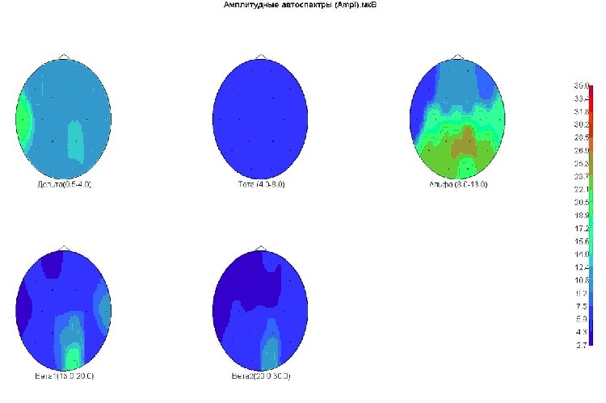
После игры Нового Кода НЛП
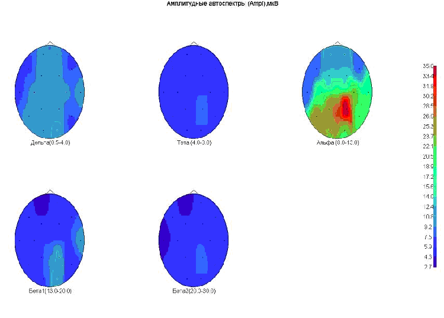
Получается, что это состояние явно отличается от классических трансов (гипнотических, например), где идет значительное повышение медленных подкорковых ритмов. На рис. 5.2 показаны карты спектрального анализа ЭЭГ до и после игры. До игры максимальный показатель 4.3, после игры - 9.8. Повышение соотношения корковых ритмов более чем в 2 раза!
Сопоставляя эти данные с результатом исследования УПП можно сказать, что повышается не столько активность самого правого полушария, сколько его готовность к переработке информации и соответствующей работе. Но эта потенциальная возможность может быть использована человеком, если чем-то заняться в период достижения такого состояния, но может и не реализоваться, если конкретных актуальных задач в данный момент нет.
Кроме того, следует отметить, что при изучении ЭЭГ в процессе игр Нового кода ни в одном исследовании не отмечалось патологических знаков и феноменов, что еще раз подтверждает безопасность работы с этими техниками.
Практическое использование состояния высокой продуктивности
Само по себе состояние хоть и уникально, однако не имеет такой ценности, как результаты, которые могут быть получены с его помощью. Для того чтобы создать эти изменения - в Новом Коде НЛП существуют специальные техники (4-х шаговая модель, Сталкинг, Изменение личной истории, Мета-системные уровни и др.).
Не стоит думать, конечно, что Новый Код НЛП исчерпывается только этим "инструментарием", однако именно эти возможности Нового Кода НЛП являются базовыми навыками, доступными большинству людей без специальной подготовки.
Материал создан на основе статьи Алексея Каптерева и Марины Королевой "Игры Нового кода НЛП: Физиологическое и психологическое исследование" (скачать статью).
Егор Булыгин
NLPING.ru
15.12.2006 г.